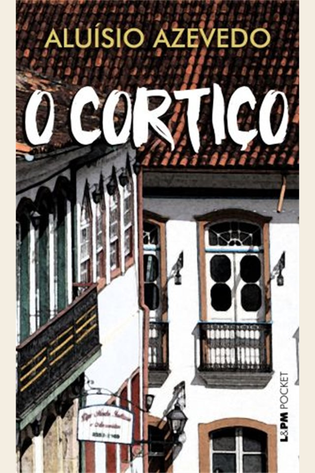

Em uma frase
João Romão enriquece explorando Bertoleza e os moradores, enquanto o cortiço cresce como força coletiva.
A ascensão de João Romão e a vida coletiva de um cortiço revelam ambição, exploração, desejo e determinismo social.

O cortiço não é só cenário: funciona como organismo social que influencia comportamentos e expõe tensões do Brasil urbano.
João Romão enriquece explorando Bertoleza e os moradores, enquanto o cortiço cresce como força coletiva.
O livro enfatiza influência do meio, instintos, hereditariedade e visão quase científica dos personagens.
A ascensão econômica aparece ligada à exploração do trabalho e à violência contra os mais vulneráveis.
A narrativa alterna a trajetória de João Romão com o cotidiano dos moradores do cortiço.
Português ambicioso, ele explora Bertoleza, trabalha sem descanso e expande seus negócios, incluindo o cortiço.
Moradores de diferentes origens vivem sob calor, desejo, trabalho e conflito. A narrativa muitas vezes trata o grupo como corpo coletivo.
Rita envolve Jerônimo, português inicialmente disciplinado. A relação é narrada por uma ótica naturalista, associando meio e instinto.
João Romão busca respeitabilidade social e casamento vantajoso. Para se livrar de Bertoleza, entrega-a à antiga condição de escravizada; ela morre tragicamente.
Os personagens são construídos conforme ideias naturalistas de meio e instinto.
Ambicioso e explorador, representa acumulação econômica sem escrúpulo.
Mulher escravizada explorada por João Romão; sua tragédia revela violência social e racial.
Personagem associada a sensualidade e energia, construída por estereótipos naturalistas.
Português que se transforma ao conviver no cortiço e se envolver com Rita.
Comerciante vizinho, rival e depois referência de status para João Romão.
Jovem cuja trajetória revela normas sociais, sexualidade e hipocrisia moral.
O romance dialoga com ideias cientificistas do século XIX e com tensões urbanas do Rio de Janeiro.
Comportamentos são explicados pela influência do meio, da hereditariedade e dos instintos.
O cortiço é tratado como personagem coletivo, cheio de movimento e conflito.
A obra denuncia exploração, mas também reproduz preconceitos de seu tempo.
Publicado em 1890, o romance reflete uma sociedade recém-saída da escravidão formal.
É naturalista pela animalização, pelo determinismo e pelo olhar materialista sobre desejos e relações sociais.
É uma das principais obras do Naturalismo brasileiro e retrato contundente das habitações coletivas urbanas.
O cortiço rivaliza com o sobrado de Miranda, criando contraste entre ascensão social e origem popular.
Questões costumam cobrar Naturalismo, determinismo e crítica à exploração.